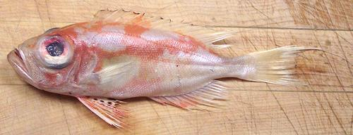

Purple-spotted Bigeye

[Thread-fin Bigeye; Priacanthus tayenus of family
Priacanthidae (Bigeyes or Catalufas)]
This fish is native to the Indo-West Pacific region, as far north as
Taiwan and as far south as northern Australia. It occurs in the Persian
Gulf, but is most common in Indonesian waters. The photo specimen was
labeled "Big Eye Snapper" in a large Asian market in Los Angeles. It can
grow to almost 14 inches, but the photo specimen was 7-1/2 inches (not
counting a thread extending from the tail) and weighed 3.5 ounces.
the purple spots are on the pelvic fins. This fish is a minor commercial
catch and not considered threatened.
There are many other Bigeys, most of which look much alike. They
are also called Bullseyes or Glasseyes. Most are small, but some can get
up to 18 inches long. Most are concentrated in the Indonesian region.
This is the only one I've found for sale in Los Angeles, so far.
More on Varieties of Fish
(very big page).
The flesh of this fish is firm, light, tasty and definitely worthwhile.
On the other hand, this can be a real problem fish if you don't know how
to handle it. The scales are so hard and densely packed they're nearly
impossible to scrape off, and it has plenty of fins and bones. Further,
the skin doesn't come off easily after cooking, it breaks up into
sticky little pieces you have to pick off one by one.
So here's how to handle this fish efficiently:
- Thaw the fish - since frozen is the only way you're going to find them
in North America.
- Above the eye and behind the collar make a short downward cut through
the skin, then make a long cut along the top of the fish as if to fillet
but just through the skin.
- Grasp the skin at the point behind the eye and peel it off in a
downwardly direction. It should all come off nicely without damaging the
flesh.
- Cut the head off, using your kitchen shears to cut down just through
the backbone, and use your filleting knife to cut the rest of the way
around the collar. Pull the head off and much of the innards will come
with it. From the front pull out the gut and the swim bladder and anything
else in there. You should end up with a cleanly hollow fish.
- Steam the fish, about 10 minutes over high heat.
- On your cutting board, holding by the tail, pull out the dorsal (top)
and anal (bottom) fins completely. If the fish is done they will come out
easily leaving a groove top and bottom.
- Now, working from the tail and top, lift the fillet off the bones. Use
a butter knife to assist if necessary. Check the rib cage area for any
bones that have come loose from the backbone and remove them. the fillets
should be quite firm so this should be pretty easy.
- You should now have a bunch of cute little fillets (the inside side is
the best looking) ready to serve however and with whatever sauce you wish,
or as an ingredient in other recipes.
sf_bigeyerz 061206 r 151229 - www.clovegarden.com
©Andrew Grygus - agryg@aaxnet.com - Linking to and
non-commercial use of this page is permitted.